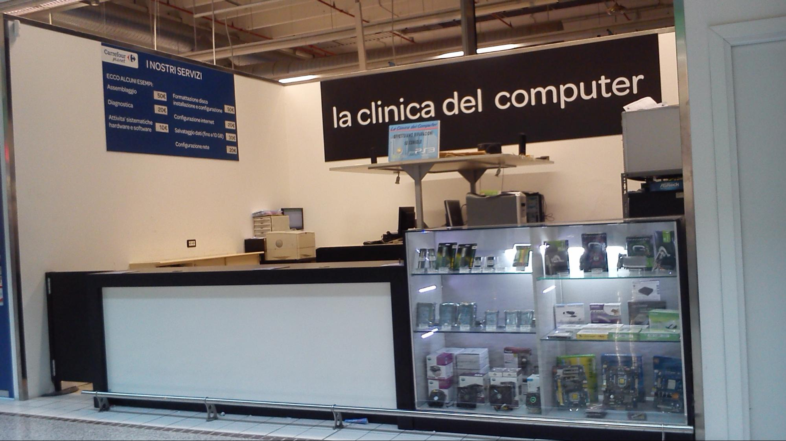

Luis Pardo
Ho fatto lo stage in un piccolo negozio del Carrefour ad Assago Milano Forun, il piccolo negozio si occupava di vendita componenti Hardware,Assistenza PC ,anche a domicilio, riparavano anche le console come la PS3 e XBox 360, i telefoni erano indecisi se ripararli o no tutto dipendeva di trovare qualcuno che li ripari per loro.
In negozio eravamo in 5, c'erano i 2 capi più il dipendente, io e un'altro stagista,avvolte potevamo essere anche in 3 perche dato che il negozio era aperto anche sabato e domenica uno alla volta di loro aveva 2 giorni di riposo.
Il negozio era aperto dalle 10:00 AM fino alle 19:00 - 19:00 PM 